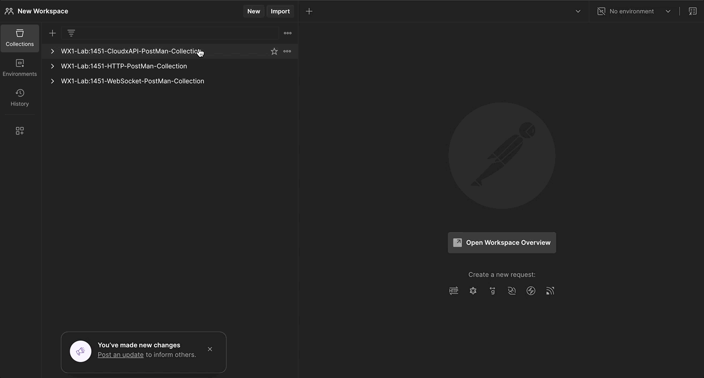

Access RoomOS xAPI via Webex Cloud (section rxp-5)
Abstract
Webex Cloud xAPI lets an authorized application address a cloud-registered RoomOS device through https://webexapis.com/v1, rather than through a direct connection to the device. The RoomOS xAPI paths remain familiar; the HTTP method, endpoint, authentication, and request body are specific to the cloud service.
This Lesson uses Postman to practice one RoomOS device at a time. Cloud xAPI is useful when direct device reachability is unavailable, but a command still requires the device to be online. Configuration changes are stored by Webex and can be applied after an offline device reconnects.
Section rxp-5 Requirements
Important
- Use a Webex cloud-registered RoomOS device that your lab account is allowed to administer.
- Install or open Postman. This Lesson uses its collection as a request scaffold; do not paste a personal access token into screenshots, shared collections, or source control.
- A personal access token is suitable only for this guided lab. A deployed integration needs an appropriate OAuth or Workspace Integration authorization model.
Download the Cloud xAPI Postman collection.
Cloud xAPI Authentication and Format (rxp-5.1)
All requests use Authorization: Bearer <token>. Set Accept: application/json; use Content-Type: application/json for commands and Content-Type: application/json-patch+json for configuration patches.
| RoomOS xAPI branch | Cloud request form | What changes |
|---|---|---|
xCommand |
POST /v1/xapi/command/<Command.Key> |
Put deviceId and arguments in the JSON body. |
xStatus |
GET /v1/xapi/status?deviceId=<id>&name=<Status.Key> |
Query a current cloud-visible status value. |
xConfiguration |
GET or PATCH /v1/deviceConfigurations?deviceId=<id> |
Read configurations or submit a JSON Patch. |
| feedback | Workspace Integration | Notifications require an integration approved in Control Hub. |
Note
Cloud xAPI permissions are token-scope dependent. Commands and statuses use their respective xAPI scopes; device configuration reads and writes require the relevant administrator device scopes. If Postman returns 401 or 403, check the token and its granted permissions before changing the request syntax.
Get a token and configure Postman (rxp-5.2)
- Go to Webex for Developers, sign in with the lab account, and copy its personal access token.
- Import the downloaded collection, select its root folder, and open Variables.
- Set
developer_Tokenanddevice_Idin the current value column. Keep the token out of exported collections. - To find the device ID, run the pre-provided List Devices request and copy the
idfor the RoomOS device you will use. You may also obtain it from the device'sxStatus Webex DeveloperIdoutput.
View the collection setup
{kind=link}

Webex Devices and Workspaces APIs (rxp-5.3)
Webex device and workspace APIs provide organization inventory context; they are not RoomOS xAPI branches. A device belongs to one workspace, while a workspace can contain zero or more devices.
Lesson: List Devices
Send the collection's List Devices request. Locate your RoomOS device and record its id as device_Id.
Successful syntax and response
GET https://webexapis.com/v1/devices
Authorization: Bearer <token>
A successful response contains an items array. The RoomOS device object's id, displayName, workspaceId, and connectionStatus help you select the correct target.
Lesson: List Workspaces
Send the collection's List Workspaces request. Compare the workspace id with the device's workspaceId and identify the corresponding workspace name.
Successful syntax and response
GET https://webexapis.com/v1/workspaces
Authorization: Bearer <token>
Executing xCommands (rxp-5.4)
For every command in this section, start from the terminal form, convert its space-separated RoomOS xAPI path to a dot-separated Command.Key, and construct the Cloud request. Run it, observe the RoomOS device, then compare your work with the collapsed answer.
Lesson: Execute an xCommand
Terminal form:
xCommand Video Selfview Set Mode: On FullScreenMode: On OnMonitorRole: First
In the Execute an xCommand Postman request, derive the command key for the URL and add the three arguments to the arguments object. Send the request and observe the device self-view.
Successful syntax and log output
POST https://webexapis.com/v1/xapi/command/Video.Selfview.Set
{
"deviceId": "{{ device_Id }}",
"arguments": {
"Mode": "On",
"FullScreenMode": "On",
"OnMonitorRole": "First"
}
}
{ "deviceId": "{{ device_Id }}", "result": {} }
Lesson: Execute an xCommand with multiple arguments with the same name
Terminal form:
xCommand Video Input SetMainVideoSource ConnectorId: 1 ConnectorId: 1 Layout: Equal
Use the next request in the collection. Convert the repeated ConnectorId arguments into a JSON array, retain Layout, and send the command.
Successful syntax and log output
POST https://webexapis.com/v1/xapi/command/Video.Input.SetMainVideoSource
{
"deviceId": "{{ device_Id }}",
"arguments": { "ConnectorId": [1, 1], "Layout": "Equal" }
}
Lesson: Execute an xCommand with a multiline argument
Terminal form:
xCommand UserInterface Extensions Panel Save PanelId: wx1_lab_multilineCommand
<Extensions><Panel><PanelId>wx1_lab_multilineCommand</PanelId><Location>HomeScreen</Location><Icon>Info</Icon><Color>#FF70CF</Color><Name>Cloud xAPI multiline command</Name><ActivityType>Custom</ActivityType></Panel></Extensions>
.
Use the multiline request. Keep PanelId in arguments and turn the XML line into a JSON string in body; the body is not another argument. Send the request and confirm that the panel appears.
Successful syntax and log output
{
"deviceId": "{{ device_Id }}",
"arguments": { "PanelId": "wx1_lab_multilineCommand" },
"body": "<Extensions><Panel><PanelId>wx1_lab_multilineCommand</PanelId><Location>HomeScreen</Location><Icon>Info</Icon><Color>#FF70CF</Color><Name>Cloud xAPI multiline command</Name><ActivityType>Custom</ActivityType></Panel></Extensions>"
}
Lesson: Execute an xCommand that generates data and returns a response
Terminal form:
xCommand UserInterface Extensions List ActivityType: Custom
Construct and send the Cloud command. Inspect result.Extensions.Panel for the panel created in the previous Lesson.
Successful syntax and log output
POST https://webexapis.com/v1/xapi/command/UserInterface.Extensions.List
{
"deviceId": "{{ device_Id }}",
"arguments": { "ActivityType": "Custom" }
}
Getting and setting xConfigurations (rxp-5.5)
Cloud configuration requests use the deviceConfigurations resource. A GET reads a key; a PATCH uses JSON Patch to set (replace) or clear (remove) a configured value. The path ends in /sources/configured/value.
Lesson: Get an xConfiguration value
Terminal form:
xConfiguration Audio DefaultVolume
In the collection's request, derive the dot-separated configuration key, send it, and identify the effective value in the response.
Successful syntax and log output
GET https://webexapis.com/v1/deviceConfigurations?deviceId={{ device_Id }}&key=Audio.DefaultVolume
Lesson: Get multiple xConfiguration values under a common node
Terminal form:
xConfiguration Audio
Query the Audio node using the collection request. Compare the returned child keys with the single-key response.
Successful syntax and log output
GET https://webexapis.com/v1/deviceConfigurations?deviceId={{ device_Id }}&key=Audio
Lesson: Set a new xConfiguration value
Terminal form:
xConfiguration Audio DefaultVolume: 100
In the PATCH scaffold, construct one JSON Patch operation that sets the configured value to 100. Send it and compare the returned effective value.
Successful syntax and log output
PATCH https://webexapis.com/v1/deviceConfigurations?deviceId={{ device_Id }}
Content-Type: application/json-patch+json
[
{
"op": "replace",
"path": "Audio.DefaultVolume/sources/configured/value",
"value": 100
}
]
Lesson: Set an xConfiguration to its default value
Remove the configured Audio.DefaultVolume value. This returns control to the default or a higher-precedence configuration source.
Successful syntax and log output
[
{
"op": "remove",
"path": "Audio.DefaultVolume/sources/configured/value"
}
]
Lesson: Set multiple xConfiguration values in a single request
Create two replace operations for these terminal forms:
xConfiguration Video Input AirPlay Mode: On
xConfiguration Video Input AirPlay Beacon: Auto
Successful syntax and log output
[
{
"op": "replace",
"path": "Video.Input.AirPlay.Mode/sources/configured/value",
"value": "On"
},
{
"op": "replace",
"path": "Video.Input.AirPlay.Beacon/sources/configured/value",
"value": "Auto"
}
]
Getting xStatuses (rxp-5.6)
Cloud xAPI status requests query the current status data retained by Webex. The RoomOS device must be cloud connected for current data to be available.
Lesson: Get an xStatus value
Terminal form:
xStatus Audio Volume
Construct the status name value and send the request. Change the volume through the device UI, then send it again to observe the new value.
Successful syntax and log output
GET https://webexapis.com/v1/xapi/status?deviceId={{ device_Id }}&name=Audio.Volume
{ "deviceId": "{{ device_Id }}", "result": { "Audio": { "Volume": 50 } } }
Lesson: Get multiple xStatus values under a common node
Terminal form:
xStatus Audio
Query the common Audio node, send the request, and compare the child values with the single Audio.Volume result.
Successful syntax and log output
GET https://webexapis.com/v1/xapi/status?deviceId={{ device_Id }}&name=Audio
Subscribing to xConfigurations, xStatuses, and xEvents (rxp-5.7)
Info
The Postman collection deliberately stops at request/response xAPI. Cloud notifications are implemented through a Workspace Integration, which an administrator enables in Control Hub. The integration receives approved status and event changes through either a public HTTPS webhook or long polling; it is an application deployment, not a one-device Postman request.
This lab does not create, configure, or activate a Workspace Integration. Review the Workspace Integrations guide after completing the fundamentals. When you build one, request the narrowest xAPI access necessary and validate webhook signatures before processing payloads.
Challenge: identify the notification model
Choose one visible event from this Lesson, such as UserInterface.Extensions.Panel.Clicked. Explain why its cloud notification needs an approved Workspace Integration rather than a direct device feedback subscription. Then identify whether a webhook or long polling better suits an internal service that cannot accept public inbound traffic.
Section rxp-5 Cleanup (rxp-5.8)
```shell title="Type into terminal and press Enter"
xConfig Audio DefaultVolume: 50
xCommand UserInterface Extensions Panel Remove PanelId: wx1_lab_multilineCommand
xCommand Video Selfview Set Mode: Off FullscreenMode: Off
xCommand Video Input SetMainVideoSource ConnectorId: 1
xCommand Audio Volume SetToDefault Device: Internal
xCommand HTTPFeedBack Deregister FeedbackSlot: 1 FeedbackSlot: 2 FeedbackSlot: 3 FeedbackSlot: 4
```